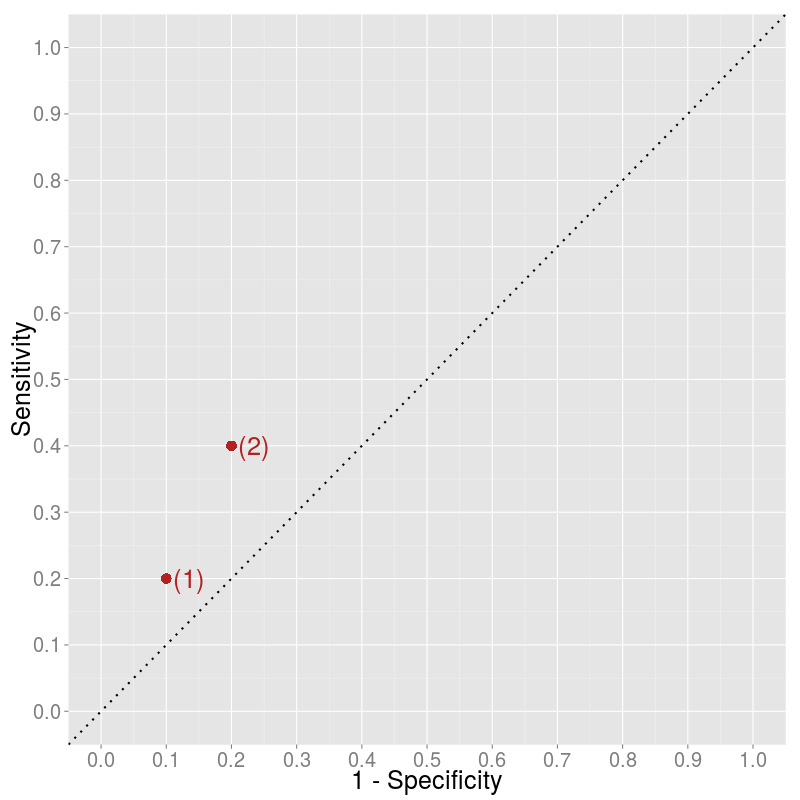
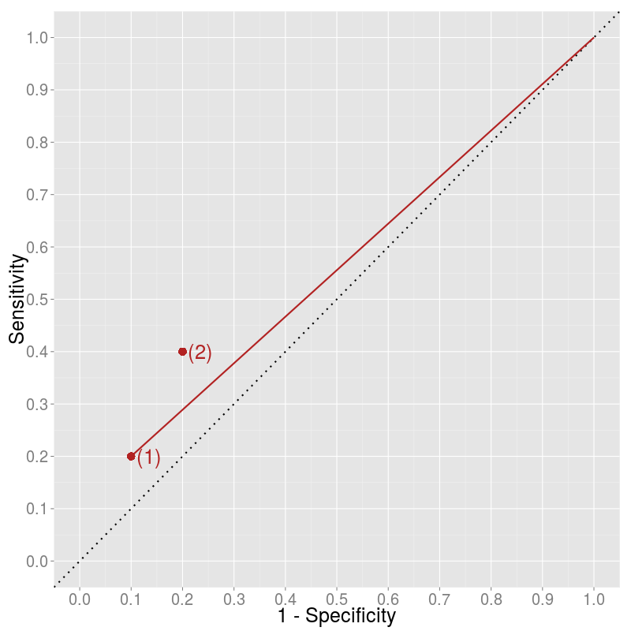

Published: Wed 27 May 2015
In blog .
Receiver Operating Characteristic curve
is a great tool to visually illustrate the performance of a binary classifier.
It plots the true positive rate ($TPR$) or the sensitivity against the false
positive rate ($FPR$) or 1 - specificity. Usually, the algorithm gives you a
probability (e.g. simple
logistic regresssion ),
so for classification you need to choose a cutoff point. The FPR-TPR pairs for
different values of the cutoff gives you the ROC curve. Non-informative
algorithms lie on the 45-degree line, as they classify the same fraction of
positives and negatives as positives, that is $TPR = TP/P = FP/N = FPR$.
But what if you want to compare two algorithms which give direct classification,
i.e. you have only two points in the plot? How to decide whether algorithm (2)
is better than algorithm (1)?

It is clear that algorithm (2) classifies more items as positive than algorithm
(1) and that this results in both more true positives (higher sensitivity) and
more false positives (lower specificity). Is this higher rate of positive
classification informative? What would we get if we just got labels negatively
classified by algorithm (1) and classified them randomly as positive? How would
we move from algorithm (1) on the graph?
The original negative-labels are both true negatives and false negatives. A
random classifier would classify them as positives in the same share. Let's say
we are classifying an item as positive by probability $\lambda$. Then, we are
going to have $\lambdaTN$ new false positives and $\lambda FN$ new true
positives relative to algorithm (1). This results in the following measures for
the ROC curve:
$$Sensitivity' = Sensitivity + \frac{\lambdaFN}{P}
1 - Specificity' = 1 - Specificity + \frac{\lambda TN}{N}$$
Thus, the slope of the movement is just
$$\frac{\lambdaFN / P}{\lambda TN / N} = \frac{1 - TP / P}{1 - TN / N} =
\frac{1 - Sensitivity}{Specificity}$$
It depends on $\lambda$ where we end up along this line. Therefore, it seems
that algorithm (2) not just randomly adds more positively-classified items but
also contains some information relative to algorithm (1).

We can arrive to the same conclusion by less calculation as well. A possible
random classification is to classify each item as positive ($\lambda = 1$). If
we take all the negatively-labeled item and classify them "randomly" as
positive, we end up having only positively classified items which leads to
extreme values of specificity (0) and sensitivity (1). To connect the point with
the (1, 1) point we should draw a line with slope $\frac{1 -
Sensitivity}{Specificity}$.